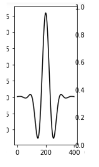
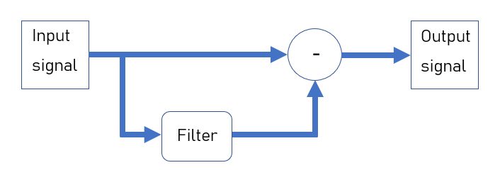
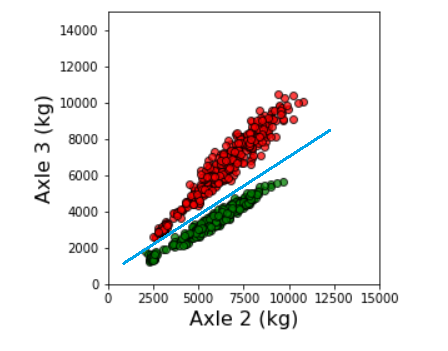
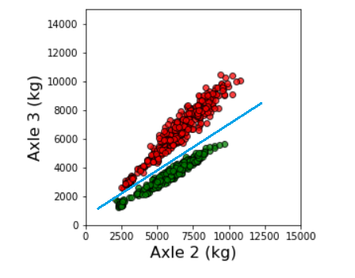

iBWIM is one of our core products and we are active in research and development into BWIM systems. We conduct both self-funded proprietory research and work within EU and governmental funded research consortia. Our R&D effort covers the whole signal chain, from optimising our sensors and electronics to applying the pattern recognition techniques to improve estimation and to classify vehicles. However our currently active topics are:
Signal processing techniques are used both in the embedded system and at the server to improve signal quality and so make vehicle estimation more robust and accurate. These algorithms act on several phenomena that affect the strain signal: diurnal variations in the bridge’s dynamic response, bridge harmonics and of course background noise. We are constantly developing and improving our algorithms.
As a vehicle crosses a bridge, its impact causes the bridge to oscillate. The frequency and amplitude is determined patly by the vehicle’s suspension, but largely by the characteristics of the bridge. In most bridges this oscillation is relatively small compared to the deflection of the bridge caused by the vehicle’s loading. However, for some bridges the oscillation is sufficiently powerful to affect the strain signal, superimposing a sinusoidal signal onto the desired signal. Left untreated this introduces spurious peaks in the signal that could result in errors in speed estimation and even axle location.


The task of the algorithm is to attenuate this harmonic component while leaving the desired unaffected. This is simplified by the fact that the bridge harmonics are usually very pure sinusoids. With this knowledge it is relatively easy to identify and remove the harmonic, Figure Blockdiagram. We used a Gabor filter due to its good temporal and spectral localisation.
 
This simple approach is highly effective in attenuating the harmonics—providing we know the frequency of the harmonic.The task becomes more difficult if the bridge’s frequency response changes. For instance, over the course of the day temperature variations will change the stiffness of the bridge—causeing a shift in the frequency of the bridge harmonics. We are now developing algorithms based on a Kalman filter to track these frequency shifts and adapt to changes in the bridge’s characteristics.
Of course, changes in the stiffness of the bridge also affect how much astrain given load will induce. Although a small effect, it is nonethless significant for high accuracy measurements. We are working on methods that use internal temperature measurements of the bridge, changes in the dynamic response of the bridge and novel calibration methods to account for this effect and improve the accuracy and precision of out iBWIM.
As with any measurement we must account for noise. With our high bit resolution quantisation error is negligable, and with on-board amplification on the sensor, and relatively short connections to the embedded system, there is little evidence of either white or shot noise.
BWIM systems provide estimates based on certain assumptions, when these assumptions fail the estimates become inaccurate. Complementary sensor systems provide information that can remove ambiguities in the interpretation of BWIM data. For instance, in some bridges consecutive axles give well resolved peaks in the strain signal, in other bridges the peaks may merge. In this case interpretation of the becomes difficult: does a merged peak correspond to a group of two or three axles?
With appropriate signal processing, our laser axle detection system identifies the exact location of the axle with respect to the strain signal. Once we know where our axles are located, estimation of their amplitude is much more reliable.

 

While complementary sensors often provide clearly useful data, it is not always obvious how to incorporate this data into the estimation process. We are currently investigating the use of constrained optimisation techniques to incorporate complementary sensor data and reduce the ambiguity of estimation. Although analytical methods for estimation exist and generally perform well, they are ill-suited to working with problems where multiple solutions exist and where different forms are available.
Optimisation techniques treat the estimation task as an exercise in fitting a series of peaks to a measured strain curve. The best combination of peaks should sum to an near exact fit of the measured strain curve. An optimisation algorithm starts from an initial guess then adjusts the parameters, step by step, to improve the fit. Essentially, optimisation techniques start with a hypothesis for a truck. They then predict the strain curve that truck would induce, and, depending on how well that prediction fits the measured data they adust the characteristics of the model.
By starting from several different initial guesses we can identify several different potential solutions. The best solution can be identified either by comparing the accuracy of its fit with those of the other candidates, or by introducing other data, such as the likelihood of a particular axle pattern.